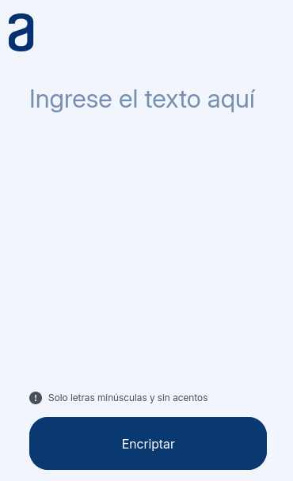

This project uses APIs built with Express to manage a database, supporting all CRUD operations—create, read, update, and delete. It provides a streamlined interface for registering new entries, retrieving data, updating records, and removing items.
Register
This project involves creating a web application that utilizes APIs built with Express to manage data in a database. It supports all CRUD (Create, Read, Update, Delete) operations, allowing users to register new entries, retrieve existing data, update records, and delete items as needed. The Express framework facilitates seamless API interactions, handling requests and responses to perform these database operations efficiently. The application is designed to provide a robust and scalable solution for managing data through a straightforward and functional API interface.
Front-End
JavaScript
Back-End
Javascript
/p>
Api
ExpressJS
Database
MongoDB
01
CINECAMPUS
The project focuses on developing a system to manage a movie theater's operations. It includes a user-friendly interface for ease of use and simulates the entire ticket purchasing process, tracking details like occupied and purchased seats.
CINECAMPUS
The project involves creating a comprehensive system to manage a movie theater's operations. It features a user-friendly graphical interface for easy navigation and interaction. The system uses MongoDB and Node.js modules to handle data management and operations. APIs built with Node.js and Express simulate the entire ticket purchasing process, including tracking and updating information on occupied and purchased seats.
Database
MongoDB
Front-End
Javascript
Server-Side
NodeJs
APIs
ExpressJs
02
SPOTIFY
This project is based on the creation of a music player using JavaScript and the Spotify API. It will allow users to search for and play music via an iframe, as well as view album covers, titles, artists, and other relevant information about the songs.
SPOTIFY
This project involves creating a music player that allows users to search for and play music, view album covers, titles, artists, and other relevant song information. The development included work on both the front-end and back-end using JavaScript, along with HTML and CSS to enhance the user interface. An API and iframe from Spotify were used to display the music and related information.
FrontEnd
Javascript0
Back-End
JavaScript
Music-info
Spotify Api

03
Encriptador
Encriptador is a web application that allows users to encrypt and decrypt text using a custom algorithm. This project is built using Web Components, providing a modular and reusable solution for text encryption.
Encriptador
Encriptador is a responsive web application that securely encrypts and decrypts text using a custom algorithm. The interface, built with HTML and CSS, is designed to be user-friendly and accessible on various devices. JavaScript handles the encryption process on both the front-end and back-end, with Express managing API requests for smooth server-client communication. The application uses Web Components to create a modular and scalable structure, ensuring the system is both flexible and maintainable.